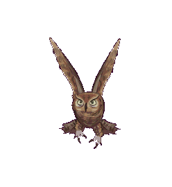

Parece que alguém recebeu um convite... de uma CORUJA!!! O que está escrito!?
Cada bruxo e bruxa recebe o seu bilhete para ingressar no Expresso de Hogwarts na Plataforma 9 3/4,
então pegue o seu bilhete e se acomode na melhor cabine que encontrar, breve vamos partir.
Ao chegar no Castelo de Magia e Bruxaria de Hogwarts todos os alunos e alunas do primeiro ano
colocam o chapéu seletor em suas cabeças e ele escolhe em qual das quatro casas para coloca-las.
Grifinória
Sonserina
Corvinal
Lufa-Lufa